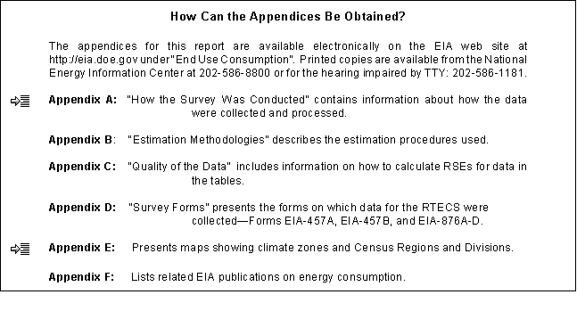

EIA Home > Transportation Home Page > Chapter 1. Introduction
Chapter 1. IntroductionHousehold Vehicles Energy Consumption 1994 reports on the results of the 1994 Residential Transportation Energy Consumption Survey (RTECS). The RTECS is a national sample survey that has been conducted every 3 years since 1985. For the 1994 survey, more than 3,000 households that own or use some 6,000 vehicles provided information to describe vehicle stock, vehicle-miles traveled, energy end-use consumption, and energy expenditures for personal vehicles. The survey results represent the characteristics of the 84.9 million households that used or had access to vehicles in 1994 nationwide. (An additional 12 million households neither owned nor had access to vehicles during the survey year.) To be included in the RTECS survey, vehicles must be either owned or used by household members on a regular basis for personal transportation, or owned by a company rather than a household, but kept at home, regularly available for the use of household members. Most vehicles included in the RTECS are classified as "light- duty vehicles" (weighing less than 8,500 pounds). However, the RTECS also includes a very small number of "other" vehicles, such as motor homes and larger trucks that are available for personal use. What Are the Major Findings of the Survey? Members of U.S. households drove more miles and consumed more fuel in 1994 than in 1988. Vehicle-miles traveled per household increased by 13 percent and the average fuel consumption per household increased by 5 percent. Household expenditures for motor gasoline, when adjusted for inflation, rose by 6 percent between 1988 and 1994. Fuel economy, as measured in miles per gallon (mpg), increased by 8 percent over the 6-year period. The average number of vehicles per household remained constant between 1988 and 1994 at approximately 1.8, while the number of households with vehicles reported in the 1988 survey was 81.3 million, compared with 84.9 million in 1994. The total number of vehicles nationwide rose from 148 million to 157 million, an increase of 6 percent. The composition of the vehicle stock continued its shift away from passenger cars toward minivans and sport-utility vehicles. In 1988, passenger cars comprised nearly three-quarters of the total vehicle stock, but by 1994, that share had dropped to 68 percent. The number of minivans and sport-utility vehicles grew by 42 percent, increasing their share from 5 percent of the total vehicle stock in 1988 to 11 percent in 1994. Pickup trucks made up 18 percent of the vehicle stock in 1994, the same as in 1998. Aside from passenger cars, only large vans decreased in both number and share of total stock, dropping from 3 percent of the total vehicle stock to 2 percent over the 6-year period. What is the Significance of the Findings? The survey results have implications for the overall fuel economy in the United States and the amount of motor gasoline consumed. The increase in the number of minivans, sport-utility vehicles, and pickup trucks may depress overall fleet fuel economy, because these vehicles are subject to the fuel economy standards for light trucks and consume more fuel per mile traveled. Fuel economy is increased, however, by the retirement of older vehicles that are less fuel efficient than newer models. Passenger cars built after 1979 showed a dramatic increase in fuel economy, which rose 3 miles per gallon between 1979 and 1980 and then increased steadily--though less dramatically--throughout the 1980's.(1) Fuel economy has leveled off in the 1990's. In 1991, 35 million vehicles, or 23 percent of the total vehicle stock, were from model year 1979 or earlier. By 1994, that number had dropped to 20 million, or 13 percent of the vehicle stock. Those older vehicles tend to be driven fewer miles than the new vehicles that replaced them, according to the survey data. Therefore, although older vehicles tend to consume more fuel per mile, their effect on the fleet average is mitigated by the fact that they are driven fewer miles. Household Vehicles Energy Consumption 1994 examines the effects of household size, household income, age of primary driver, vehicle characteristics, and Census region on household vehicle stock, miles traveled, fuel economy, and fuel consumption (Table 1.1). In general, the size of the household, composition of the household, and household income had a large effect on those variables. What is the Purpose of the Survey Report? The purpose of this report is to provide information on the use of energy in residential vehicles in the 50 States and the District of Columbia. Included are data about the number and types of vehicles in the residential sector, the characteristics of those vehicles, the total annual vehicle-miles traveled, per-household and per-vehicle vehicle-miles traveled, vehicle fuel consumption and expenditures, and vehicle-fuel economy. The Energy Information Administration (EIA) is mandated by Congress to collect, analyze, and disseminate impartial, comprehensive data about energy: how much is produced, who uses it, and the purposes for which it is used. To comply with this mandate, EIA collects energy data from a variety of sources covering a wide range of topics.(2) How Was the Survey Conducted? The data for this report are based on personal interviews and telephone interviews with householders from the 1993 Residential Energy Consumption Survey (RECS) and the 1994 RTECS, conducted from 1993 through early 1995. The 1994 RTECS represents 96.6 million households, of which 84.9 million owned or had access to 156.8 million household motor vehicles in the 50 States and the District of Columbia. The beginning-of-year data collection for the RTECS was combined with the 1993 RECS personal interviews in the fall of 1993. In 1994 and 1995, further data about the vehicle stock and vehicle-miles traveled were collected by telephone interviews. Mail questionnaires were sent to households that could not be contacted by telephone. Mid-year data collection during 1994 was conducted to identify vehicles acquired or disposed of during the first half of the year and to obtain estimated beginning or final odometer readings on those vehicles. The end-of-year data collection was conducted in the first 4 months of 1995. At that time final odometer readings and changes in vehicle stock were collected. The survey was used to collect data on actual vehicle-miles traveled for each vehicle in a household by obtaining the odometer reading at two points in time. Vehicle characteristic information (type of vehicle, engine size, number of cylinders, type of fuel system, etc.) was collected directly from respondents and from decoded Vehicle Identification Numbers. Vehicle fuel consumption and expenditures were estimated using vehicle fuel economies as calculated (and adjusted) by the Environmental Protection Agency and presented in miles per gallon and by motor fuel prices collected by the Bureau of Labor Statistics. Are the Survey Results Statistically Significant? Because the statistics published in this report are based on a sample of all residential housing units in the 50 States and the District of Columbia as of November 1993, the values are estimates rather than exact measures for the population. Certain estimates in these tables are suppressed due to large error levels or few sample observations. (See table footnotes for explanation.) Each table in the "Detailed Tables" section includes row and column relative standard error (RSE) factors to be used in calculating RSEs for individual table entries. Unless stated otherwise, all comparisons reported in the text are statistically significant, based on a standard test made at the 0.05 significance level. These tests were made using the actual RSE's computed by EIA. No adjustments were made for simultaneous inference.
Source: Table 5.2 in this report. How Is This Report Organized? A discussion of the highlights of survey findings, featuring tables and figures that present information of special interest or that provide a finer analysis than is contained in the detailed tables, follows this section. The "Detailed Tables" section that follows the main text contains extensive cross-tabulations of household characteristics, vehicle characteristics, and vehicle fuel consumption and expenditures. Definitions of the terms used in this report are located in the Glossary.  Thank You . . . EIA gratefully acknowledges the cooperation of the respondents in supplying the information used to produce the estimates presented here. 1. U.S. Department of Transportation, Summary of Fuel Economy Performance, April 1996, (Washington, DC, April 1996), p. 4. 2. EIA conducts numerous energy-related surveys. In general, the surveys can be divided into two broad groups: supply surveys, directed to the suppliers and marketers of specific energy sources, that measure the quantities of specific fuels produced for and/or supplied to the market; and consumption surveys, which gather information on the types of energy used by the end users along with the characteristics of those end users that are associated with energy use. The RTECS belongs to the consumption group because it collects information directly from the end user, the household. File Last Modified:February 1, 2002 If you are having any technical problems with this site, please contact the EIA Webmaster at wmaster@eia.doe.gov | ||||||||||||||||||||||||||||||||||||||||||||||||||||||||||||||||||||||||||||||||||||||||||||||||||||||||||||||